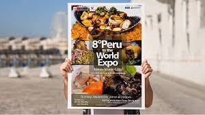
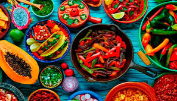
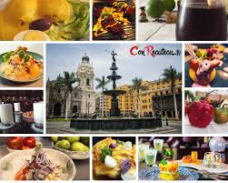
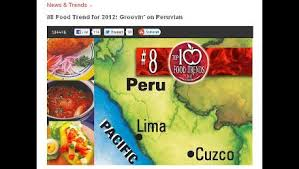

Novedades

ver...
Una fiesta, feria o festival gastronómico o de comida es un evento de ocio cuyo tema central
son los alimentos y/o bebidas, bien sea sobre una técnica culinaria o producto en particular
o sobre la gastronomía de una región, una denominación de origen, entre otros.

ver...
Gracias a los accidentes geográficos que posee la sierra del Perú, la gastronomía
andina se caracteriza por llevar a la mesa gran variedad de alimentos nutritivos como son
la papa, el camote, las habas, el maíz, entre otros.

ver...
Perú fue reconocido el 28 de noviembre como el mejor destino culinario del mundo
por octavo año consecutivo en los World Travel Awards. También fue premiado como
mejor destino cultural y se hizo lo propio con Machu Picchu como la mayor atracción
turística a nivel global.

ver...
El sitio web especializado en el mercado gastronómico, The Food Channel, ubicó a la comida
peruana en el puesto ocho de sus 10 primeras tendencias para el próximo año.
El ranking incluye, aparte de cocina internacional, movimientos culturales y
comportamientos que influirán en el consumo gastronómico.